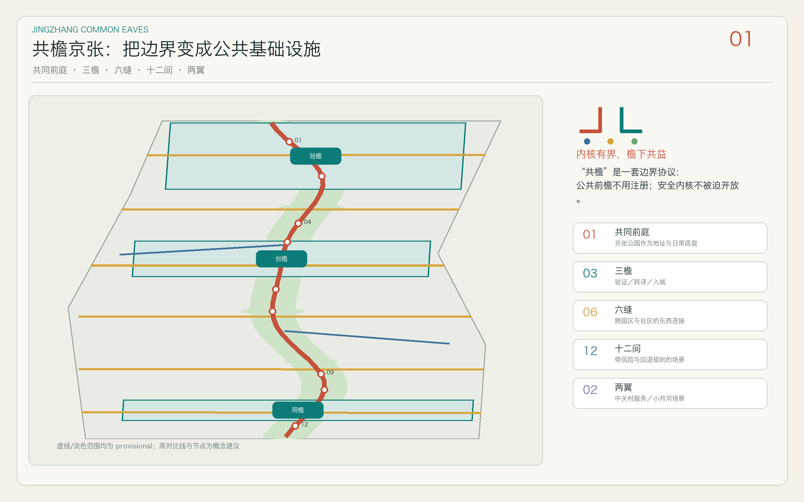
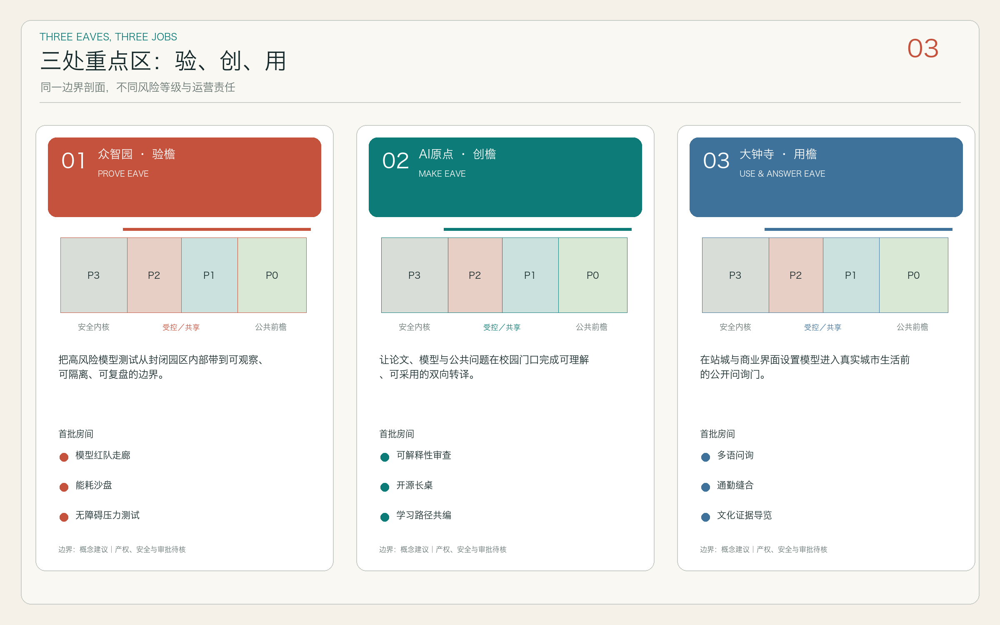
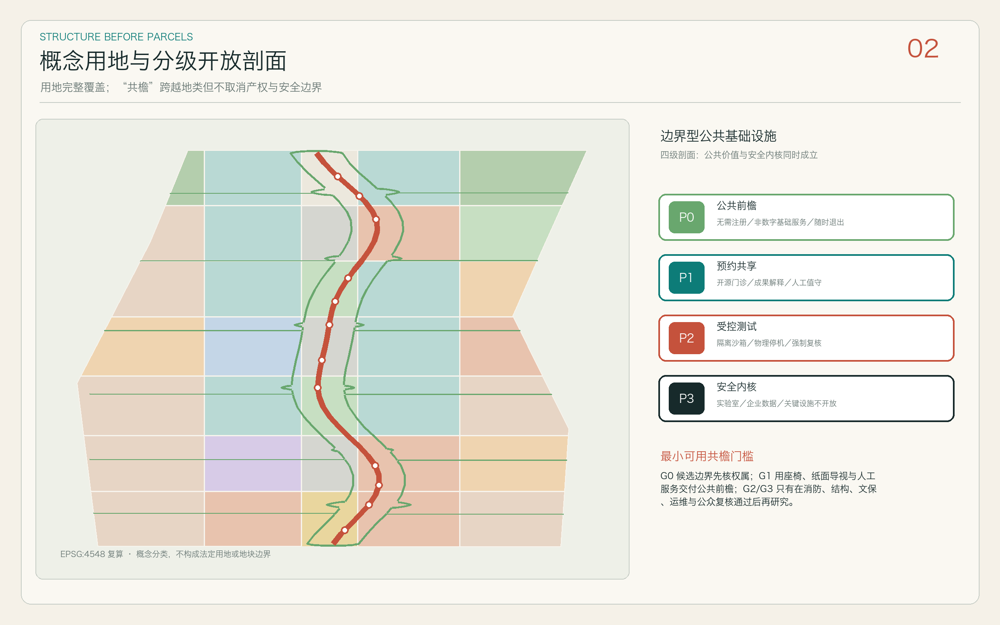
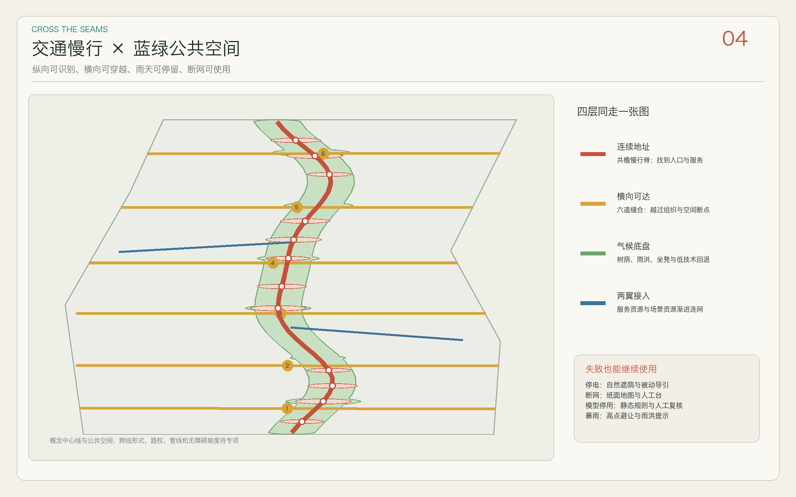
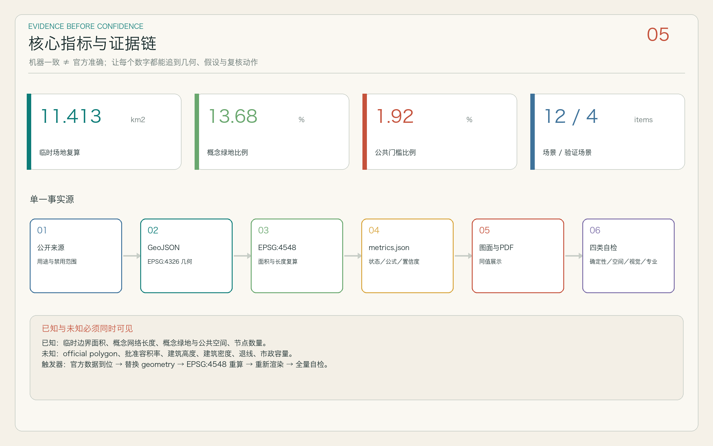

共檐京张
内核有界，檐下共益。让园区、校园、企业与社区在不迫使安全内核开放的前提下，持续向城市交付公共价值。
PROVISIONAL
总览地图

三层范围
机制与生态
研究组织网络、创新服务、国际案例和年度活动，不虚构统筹范围 polygon。
网络与接口
以京张公园共同前庭、六道缝合、两翼和同源指标构成概念结构。
门槛原型
验檐、创檐和用檐分别处理安全验证、知识共创与公众采用。
重点区域

用地分区

交通慢行
纵向连续地址
共檐慢行脊把服务入口串成可识别地址，六道东西缝合穿越组织边界；两翼只表达资源联系，不冒充现状道路。
失败回退
停电仍有自然遮荫，断网仍有纸面导引，模型停用回退人工值守；跨线形式、路权、停车和断面待专项。
蓝绿公共空间

建筑
P0 公共前檐
无需身份门槛，提供无障碍、纸面导引、坐凳与人工求助。
P1 预约共享
开源门诊、成果解释、小型活动；最小化数据并有人值守。
P2 受控测试前室
隔离沙箱、物理停机、日志留存与强制人工复核。
P3 非开放安全内核
实验室、企业数据与关键设施不因公共性叙事而被迫开放。
buildings.geojson 仅为界面原型，不是现状建筑普查、拆除清单或高度控制。
更新项目
门槛先行
三重点区各交付一个 40–150㎡ 最小可用接口。
缝合成网
数据、路权与无障碍条件通过后再接入六道横向联系。
扩散共治
公众复核和运营绩效通过后，再向两翼与社区渐进扩散。
AI 场景
核心指标

任务覆盖
23 项任务
公告 1.3—1.5 与 agent.1—agent.6 全部连接到报告章节、GeoJSON、指标、图纸、来源、假设和自检。
15 项设计深度
“complete”表示方法和证据链完整，不表示缺失的官方底数已被补齐。
自检状态
四类检查
确定性验证、空间拓扑、离线视觉、专业证据逐项运行。
目标状态
正式包完成后以仓库脚本输出为准；临时边界仅保留 minor 警示。
来源
SITE-PACKAGE · SOURCE-REGISTRY · OFFICIAL-ANNOUNCEMENT · CONTEXT-JZ-PARK-2024 · CONTEXT-JZ-PARK-2026 · CASE-KENDALL · CASE-ONE-NORTH · CASE-SEOUL-AI-HUB · CASE-MARIA-01 · CASE-BARCELONA
完整 URL、访问日期、用途和禁止用途见 sources.json；网页没有加载任何远程资源。
假设
A-PROV-001 · A-KEY-001 · A-CONTROLS-001 · A-ROAD-001 · A-BUILDING-001 · A-HERITAGE-001 · A-MUNICIPAL-001 · A-SERVICE-001 · A-OPERATION-001 · A-CASE-001 · A-METRIC-001 · A-COPYRIGHT-001